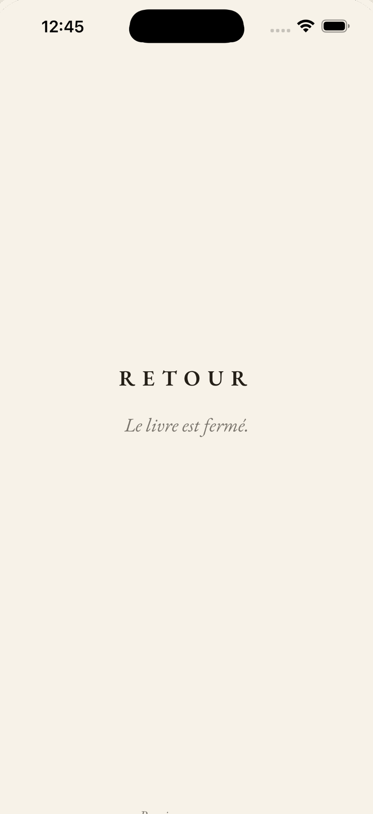
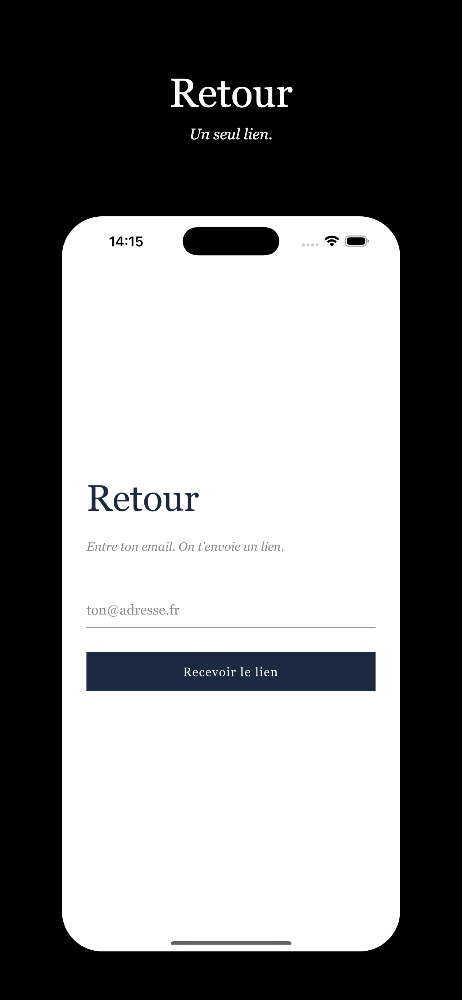
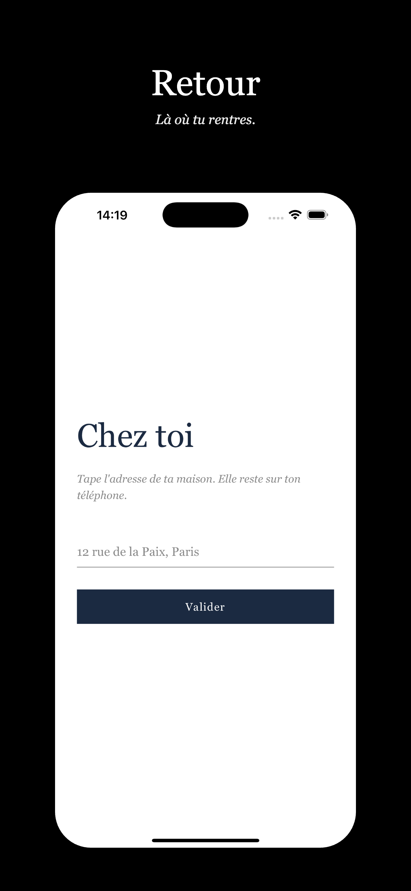
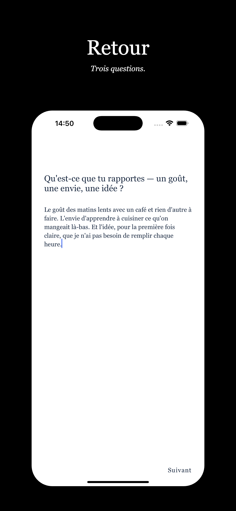
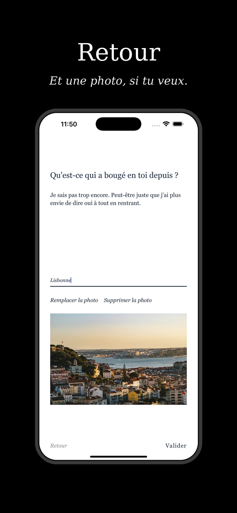
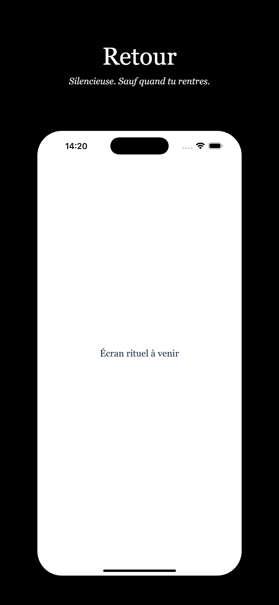

Lifestyle · Réflexion — 2026
Retour
Le rituel du retour de voyage

Retour est une app mono-usage au concept unique : elle détecte automatiquement votre retour de voyage et ouvre alors une fenêtre de 24 heures pour poser vos impressions à chaud, avant que le quotidien ne reprenne. Un rituel silencieux, minimaliste, qui transforme chaque voyage en souvenir écrit.
Ce qu'elle fait- Détection automatique du retour de voyage
- Fenêtre de réflexion de 24 heures
- Rituel d'écriture guidé
- Design silencieux et minimaliste
- Souvenirs accumulés voyage après voyage
React NativeExpoTypeScriptExpo RouterZustandPocketBase (self-hosted)Géolocalisation
Captures




